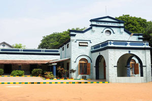
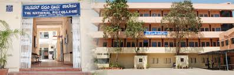

School: MITRALAYA GIRLS HIGH SCHOOL
The Mitralaya Girls high School is located on Mission Road, Bangalore and is managed by the Church of South India. The school offers English medium education and is affiliated to the Karnataka Secondary Education Examination Board. The school has classes from Year 1 to Year 10. A school is an educational institution designed to provide learning spaces and learning environments for the teaching of students (or "pupils") under the direction of teachers. Most countries have systems of formal education, which is commonly compulsory. In these systems, students progress through a series of schools. The names for these schools vary by country but generally include primary school for young children and secondary school for teenagers who have completed primary education. An institution where higher education is taught, is commonly called a university college or university, but these higher education institutions are usually not compulsory.
PU College: NATIONAL PRE UNIVERSITY COLLEGES
The College is under the general administrative control of the Governing Council of the National Education Society of Karnataka. The Governing body with one representatives from the Governing Council, the office bearers of the N.E.S., Principal of the National College, Basavanagudi, Secretary of the College Council, a Teacher representative exercise supervision over the working of the College. The National College, Bangalore is the name given to two sister institutions in Bangalore, India: the National College Basavanagudi, founded in 1920, and the National College, Jayanagar, founded in 1965. Other related institutions, also called "National College", are located in Bagepalli,(chikkaballapur Dist) and Gowribidanur.These institutions are managed by The National Education Society Of Karnataka(NES). National College Basavanagudi is located in Basavanagudi. It was started in the year 1920. The founder of this College is Late Sampath Giri Rao. Padmabhushan Dr. H. Narasimhaiah was the chairman of NES until his death. The college flourished under his able leadership and administration. He also started the Bangalore Science Forum (BSF), the first of its kind in India, where luminaries from various scientific disciplines would lecture everyday for an entire month. BSF holds the record for organizing the highest number of lectures on science in India. BSF has also received a National Award for promoting science. It is also the first institute to establish BANGALORE SOCIAL SCIENCES FORUM for social sciences on the same objectives and parallel with Bangalore Science Forum. It conducts week-long social sciences festival with eminent and luminous persons speaking on the various relevant issues.
College: DON BOSCO INSTITUTE OF TECHNOLOGY[DBIT]
Don Bosco Institute of Technology (DBIT) is a technological and science education college located in Kumbalagodu Village, Bangalore. In 2001, Don Bosco Institute of Technology, was established on a rambling sylvan area of about 36 acres (15 ha) campus, about 6 kilometres (3.7 mi) away from Kengeri bordering the Bangalore–Mysore Road. DBIT provides civil, mechanical, engineering technology, computer and management education Don Bosco Institute of Technology is a technological and science education college located in Kumbalagodu Village, Bangalore. In 2001, Don Bosco Institute of Technology, was established on a rambling sylvan area of about 36 acres campus, about 6 kilometres away from Kengeri bordering the Bangalore–Mysore Road.